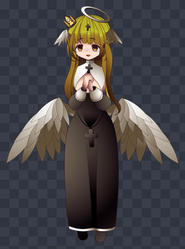
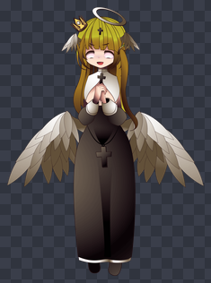
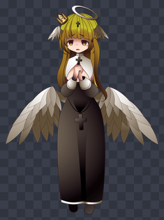
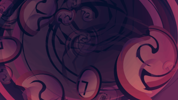
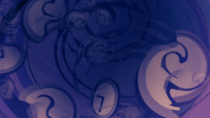

关卡与敌人
做一整套自己的战斗内容。敌人、AI、波次、背景、剧情。
敌人
Data/Enemy/Emma.json
{
"Name": "艾玛",
"ID": 9201,
"PSB": "Emma,Normal,Normal",
"WellTerrain": "洞窟",
"StartHP": 420, "LvAddHP": 18,
"StartAtk": 48, "LvAddAtk": 1,
"Pos_y": -1120, "Sca": 48,
"DoID": ["1", "1", "1"],
"DoCON": ["", "{Turn}%4==3", "{Turn}%3==0"],
"DoSkill": ["连环普通拳", "急速疗愈", "防御"]
}敌人 AI：三条平行列表
DoID / DoCON / DoSkill
是对齐的三条列表。同一个位置是同一条规则。
| 字段 | 意义 |
|---|---|
DoID | 权重。数字越大越常被抽中。填 -1 = 开场被动（该格 DoSkill 必须是被动技能） |
DoCON | 发动条件。空字符串 = 永远成立 |
DoSkill | 技能名。要对得上游戏既有的，或你自己在 Data/Skill/ 加的 |
三条长度不一致时以最短的为准
多出来的会被安静忽略，不会报错。要自己数好。
上面的示例读起来是：
- 平常用“连环普通拳”
- 第 3、7、11… 回合用“急速疗愈”（
{Turn}%4==3） - 第 3、6、9… 回合用“防御”（
{Turn}%3==0）
敌人立绘的位置与大小
| 字段 | 说明 |
|---|---|
Pos_y | 立绘在战斗画面的垂直位置。杂鱼大多在 -1120 附近 |
Sca | 缩放。杂鱼大多在 70～80 |
Sca 要配合你那张 PNG 的实际像素高度
图越高，Sca 要越小。示例的艾玛原图是 1475×2020，所以
Sca 用 48。同样的画面高度换成 1000×1600 的图，就要填 60 左右。

Sca: 48 / Pos_y: -1120。同样的画面高度换成 1000×1600 的图就要填 60 左右 —— 图越高，
Sca 越小。
最快的做法：抄一只体型相近的既有敌人
找游戏里大小差不多的敌人，把它的
Pos_y / Sca 抄过来再微调。
调整立绘不用重开游戏
改完存档，回标题重新“开始新游戏”或“读取存档”就会套用。
敌人立绘放哪
跟角色完全同一套规则（见加入图片），
差别只在敌人的字段叫 PSB。
Images/Role/Emma/Body/Body_Normal.png
Images/Role/Emma/Face/Face_Normal.png
Images/Role/Emma/Face/Face_Sad.png
Images/Role/Emma/Face/Face_Shock.pngBody_Normal

+Face_Shock

Face_Sad 单独看
Face_Sad.png 单独的样子 ——
每张表情图都是完整的全身画布，脸以外透明。棋盘格 = 透明。
PSB 的三段是“PSB名,表情,服装”：
"PSB": "Emma,Normal,Normal"对应到 Images/Role/Emma/Face/Face_Normal
与 Images/Role/Emma/Body/Body_Normal。
角色与敌人可以共用同一组立绘
示例的艾玛先当敌人出场，打赢之后用同一个
两张表各填自己的
PSB 加入队伍。两张表各填自己的
Pos_y / Sca
—— 战斗画面与主画面的取景不同。
关卡
Data/Stage/AbyssTrial.json
{
"Name": "模组试炼 深渊",
"ID": 9201,
"Group": "模组",
"Tag": "战斗",
"Rank": 1,
"FightWinExp": "60", "FightWinMoney": "60",
"FightWhere": "洞窟",
"FightBackground": "Background_ModAbyss, Background_ModAbyss_Night",
"FightBGM": "BGM_Fight2",
"EnemyLv": ["3", "5"],
"Enemys": ["艾玛", "艾玛, 幽灵水母"],
"GetItem": ["苹果"],
"GetItemProbability": ["0.5"]
}| 字段 | 说明 |
|---|---|
Group | 关卡菜单的群组。游戏内建了一个叫“模组”的群组可以直接用 |
Tag | 没有“战斗”的话只播演出、不开战 |
FightWhere | 场地，影响地形相性 |
FightBackground | 战斗背景。逗号分隔可以每波换一张 |
FightBGM | 战斗音乐。逗号分隔可以每波换一首 |
波次
Enemys 的一个元素 = 一个波次
同一波要出多只时用逗号隔开。
"Enemys": ["艾玛", "艾玛, 幽灵水母"] 第一波 1 只、第二波 2 只
"Enemys": ["艾玛,幽灵水母"] 一波 2 只（空格有没有都认得）
敌人可以直接用游戏既有的
上面的“幽灵水母”就是游戏本体的敌人，不一定要自己新增。
同一波不要放两只同名的敌人
不要写
游戏有不少地方是用名字回查敌人在场上的位置， 两只同名时永远只查得到第一只 —— 第二只的特效座标和目标锁定会跑到第一只身上。
想让同款敌人出两只，复制一份数据改个名字 （游戏本体的“骑士 / 骑士B / 骑士C”就是这样做的）。
跨波次同名没问题（每波开始前会整批清掉重生）。
"艾玛, 艾玛"。游戏有不少地方是用名字回查敌人在场上的位置， 两只同名时永远只查得到第一只 —— 第二只的特效座标和目标锁定会跑到第一只身上。
想让同款敌人出两只，复制一份数据改个名字 （游戏本体的“骑士 / 骑士B / 骑士C”就是这样做的）。
跨波次同名没问题（每波开始前会整批清掉重生）。
这告诉我们不要把名字当 key。但这款游戏已经来不及了。
平行对齐的列表
这些字段是“一个元素一个波次”或“同位置是同一项”：
| 字段组 | 对齐方式 |
|---|---|
Enemys / EnemyLv | 一个元素 = 一个波次 |
FightBackground / FightBGM | 逗号分隔，一个 = 一个波次 |
GetItem / GetItemProbability | 同位置 = 同一项掉落 |

第 1 波Background_ModAbyss

第 2 波Background_ModAbyss_Night
FightBackground 用逗号分隔就能每波换一张。背景图是 960×540，放在
Images/Background/。
列表比波数短时会自动沿用
EnemyLv 不够长时游戏会自动算等级；
FightBackground / FightBGM 不够时沿用第一个。
关卡剧情
三个字段可以挂演出，值就是演出的 Name：
| 字段 | 时机 |
|---|---|
StartShow | 进关卡、开打之前 |
FightWinShow | 打赢之后 |
FightLoseShow | 打输之后 |
三个都是选填，留空就没有那段演出。演出本身放在 Data/Show/
（见演出与发放内容）。
开场演出示例
Data/Show/StageStart.json
{
"Name": "模组试炼 深渊_开场",
"Tag": "剧情",
"Shows": [
"<BG>Background_ModAbyss,0,#00000000",
"<BG>Background_ModAbyss,1,#FFFFFF",
"<Var>TalkBoxTopDownDontShow,=,0",
"<Talk>深渊的最底层，传来了不合时宜的圣歌。",
"<Image>Mid,Emma,Normal",
"<Talk>艾玛：……♪",
"<Image>Mid,Emma,Shock",
"<ImageShake>Mid",
"<Talk>艾玛：啊，有客人。",
"<Talk>",
"<Image>",
"<BG>,1"
]
}
惯例
- 开头
<BG>名称,0,#00000000+<BG>名称,1,#FFFFFF= 背景淡入 <Talk>不带内容 = 关掉对话框<Image>不带参数 = 清掉三个槽的立绘- 结尾
<BG>,1把背景淡出，让战斗画面接手
“打赢才入队”
比 AutoRun 更自然的角色发放方式 —— AutoRun 是“一启用就给”， 放在胜利演出则是“玩家打赢才拿到”：
"<Image>Mid,Emma,Laugh",
"<Talk>艾玛：那么，照约定，从今天起我就跟着你们了。",
"<Talk>",
"<Image>",
"<AddRole>艾玛",
"<BG>,1"
重复通关不用自己加标志
<AddRole> 对已经持有的角色是安全的 ——
直接跳过，不会重复给、也不会把等级打回 1。
战斗中的回合演出
战斗进行中的每个回合开始时也可以插演出。这种不用填在关卡字段里， 命名对上就会被叫到：
{关卡Name}_Wave{波次}_{PlayerTurn|EnemyTurn}{该波第几回合}波次与回合都从 1 开始。例如：
| 演出 Name | 时机 |
|---|---|
模组试炼 深渊_Wave2_PlayerTurn1 | 第二波、玩家的第一个回合 |
模组试炼 深渊_Wave2_PlayerTurn | 第二波的每个玩家回合 |
模组试炼 深渊_PlayerTurn3 | 整场的第 3 回合（不分波次） |
带数字的优先于不带数字的
同时存在
_PlayerTurn1 和 _PlayerTurn 时，
第一回合会播带数字的那个。
战斗中演出的惯例不同
剧情段用背景图，战斗中用 null 加半透明黑当遮罩，
盖在战斗画面上：
"<BG>null,0,#00000000",
"<BG>null,0.5,#000000CC", 把战斗画面压暗
"<Wait>1",
"<Image>Mid,Emma,Shock",
"<Talk>艾玛：等一下，你们是认真的吗？",
"<Talk>",
"<Image>",
"<BG>,0.5", 收掉遮罩，回到战斗
"<EnemyImage>艾玛,Emma,Sad" 顺手换掉场上那只的表情<EnemyImage> 要放在遮罩收掉之后
放在遮罩还盖着的时候换表情，玩家看不到变化。
<EnemyImage> 的第一段是敌人的数据 Name
第二段起才是“PSB名,表情,服装”。跟 <Image> 的槽位参数不同。
让玩家真的看得到关卡
写进数据表只代表“关卡存在”，玩家还没有它
要靠 AutoRun 演出发给玩家，两行都不能省：
Data/Show/AutoRun.json
{
"Name": "MyMod",
"Tag": "AutoRun",
"Shows": [
"<AddStageGroup>模组",
"<AddStage>模组试炼 深渊"
]
}详见演出与发放内容。
技能
技能放 Data/Skill/。角色的技能字段有一个容易写错的对应规则：
Skill 的前 4 个是“基础技能”，第 5 个起才吃条件
Skill 前 4 个一开始就会，不需要条件。第 5 个之后依序对应
ElseSkillCon：
Skill[4] <- ElseSkillCon[0]
Skill[5] <- ElseSkillCon[1]
...ElseSkillCon 不需要为前 4 个技能补空字符串。
官方示例模组
游戏附带了完整示例
不确定某个字段怎么写时，去看示例怎么做的。
Mods/ 底下有官方示例模组，把整套关卡内容示范了一遍 ——
自订敌人（含表情差分）、两波关卡（每波换背景）、开场 / 胜利 / 失败三段剧情，
以及“打赢才入队”的角色。不确定某个字段怎么写时，去看示例怎么做的。